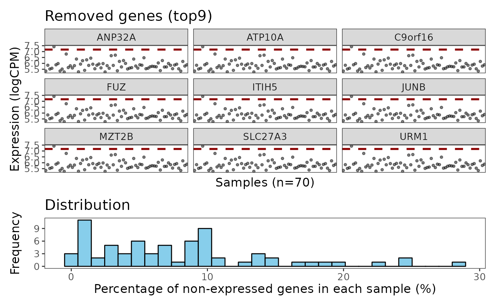

Plot gene-wise QC plot
A SpatialExperiment object.
Integer. Indicating the top n genes will be plotted. Default is 9.
variables or computations to sort samples by (tidy style).
Numeric. Point size.
Character. Line types for ggplot.
Color for line.
Cex for line.
Color for histogram.
Fill for histogram.
Bin numbers for histogram.
Text size.
Integer. Column number for layout. Default is 1.
Integer. Row number for layout. Default is 2.
Vector of numerics with length of 2. Default is c(1, .4).
aesthetic mappings to pass to ggplot2::aes() of the dot plots.
A ggplot object
data("dkd_spe_subset")
spe <- addPerROIQC(dkd_spe_subset)
plotGeneQC(spe)
